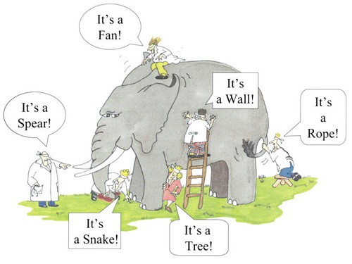
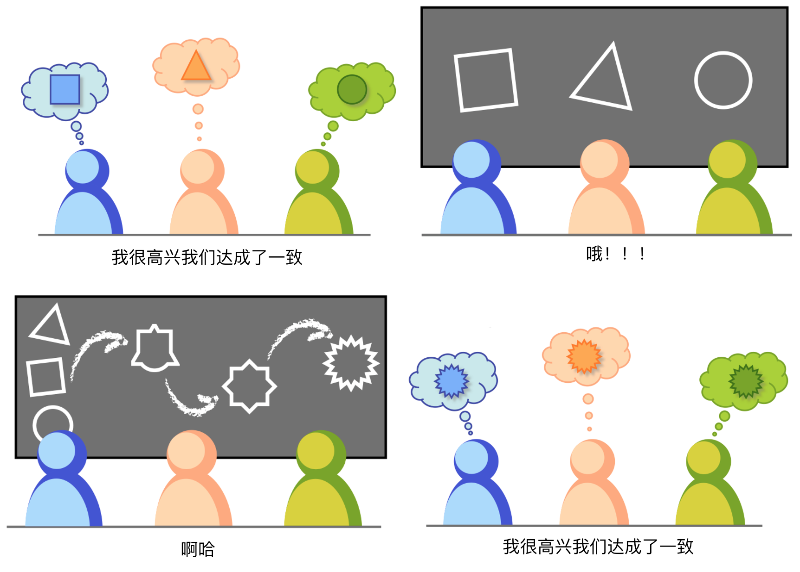

- 001 「战略篇」访谈 DDD 和微服务是什么关系？.md.html
- 002 「战略篇」开篇词：领域驱动设计，重焕青春的设计经典.md.html
- 003 领域驱动设计概览.md.html
- 004 深入分析软件的复杂度.md.html
- 005 控制软件复杂度的原则.md.html
- 006 领域驱动设计对软件复杂度的应对（上）.md.html
- 007 领域驱动设计对软件复杂度的应对（下）.md.html
- 008 软件开发团队的沟通与协作.md.html
- 009 运用领域场景分析提炼领域知识（上）.md.html
- 010 运用领域场景分析提炼领域知识（下）.md.html
- 011 建立统一语言.md.html
- 012 理解限界上下文.md.html
- 013 限界上下文的控制力（上）.md.html
- 014 限界上下文的控制力（下）.md.html
- 015 识别限界上下文（上）.md.html
- 016 识别限界上下文（下）.md.html
- 017 理解上下文映射.md.html
- 018 上下文映射的团队协作模式.md.html
- 019 上下文映射的通信集成模式.md.html
- 020 辨别限界上下文的协作关系（上）.md.html
- 021 辨别限界上下文的协作关系（下）.md.html
- 022 认识分层架构.md.html
- 023 分层架构的演化.md.html
- 024 领域驱动架构的演进.md.html
- 025 案例 层次的职责与协作关系（图文篇）.md.html
- 026 限界上下文与架构.md.html
- 027 限界上下文对架构的影响.md.html
- 028 领域驱动设计的代码模型.md.html
- 029 代码模型的架构决策.md.html
- 030 实践 先启阶段的需求分析.md.html
- 031 实践 先启阶段的领域场景分析（上）.md.html
- 032 实践 先启阶段的领域场景分析（下）.md.html
- 033 实践 识别限界上下文.md.html
- 034 实践 确定限界上下文的协作关系.md.html
- 035 实践 EAS 的整体架构.md.html
- 036 「战术篇」访谈：DDD 能帮开发团队提高设计水平吗？.md.html
- 037 「战术篇」开篇词：领域驱动设计的不确定性.md.html
- 038 什么是模型.md.html
- 039 数据分析模型.md.html
- 040 数据设计模型.md.html
- 041 数据模型与对象模型.md.html
- 042 数据实现模型.md.html
- 043 案例 培训管理系统.md.html
- 044 服务资源模型.md.html
- 045 服务行为模型.md.html
- 046 服务设计模型.md.html
- 047 领域模型驱动设计.md.html
- 048 领域实现模型.md.html
- 049 理解领域模型.md.html
- 050 领域模型与结构范式.md.html
- 051 领域模型与对象范式（上）.md.html
- 052 领域模型与对象范式（中）.md.html
- 053 领域模型与对象范式（下）.md.html
- 054 领域模型与函数范式.md.html
- 055 领域驱动分层架构与对象模型.md.html
- 056 统一语言与领域分析模型.md.html
- 057 精炼领域分析模型.md.html
- 058 彩色 UML 与彩色建模.md.html
- 059 四色建模法.md.html
- 060 案例 订单核心流程的四色建模.md.html
- 061 事件风暴与业务全景探索.md.html
- 062 事件风暴与领域分析建模.md.html
- 063 案例 订单核心流程的事件风暴.md.html
- 064 表达领域设计模型.md.html
- 065 实体.md.html
- 066 值对象.md.html
- 067 对象图与聚合.md.html
- 068 聚合设计原则.md.html
- 069 聚合之间的关系.md.html
- 070 聚合的设计过程.md.html
- 071 案例 培训领域模型的聚合设计.md.html
- 072 领域模型对象的生命周期-工厂.md.html
- 073 领域模型对象的生命周期-资源库.md.html
- 074 领域服务.md.html
- 075 案例 领域设计模型的价值.md.html
- 076 应用服务.md.html
- 077 场景的设计驱动力.md.html
- 078 案例 薪资管理系统的场景驱动设计.md.html
- 079 场景驱动设计与 DCI 模式.md.html
- 080 领域事件.md.html
- 081 发布者—订阅者模式.md.html
- 082 事件溯源模式.md.html
- 083 测试优先的领域实现建模.md.html
- 084 深入理解简单设计.md.html
- 085 案例 薪资管理系统的测试驱动开发（上）.md.html
- 086 案例 薪资管理系统的测试驱动开发（下）.md.html
- 087 对象关系映射（上）.md.html
- 088 对象关系映射（下）.md.html
- 089 领域模型与数据模型.md.html
- 090 领域驱动设计对持久化的影响.md.html
- 091 领域驱动设计体系.md.html
- 092 子领域与限界上下文.md.html
- 093 限界上下文的边界与协作.md.html
- 094 限界上下文之间的分布式通信.md.html
- 095 命令查询职责分离.md.html
- 096 分布式柔性事务.md.html
- 097 设计概念的统一语言.md.html
- 098 模型对象.md.html
- 099 领域驱动设计参考过程模型.md.html
- 100 领域驱动设计的精髓.md.html
- 101 实践 员工上下文的领域建模.md.html
- 102 实践 考勤上下文的领域建模.md.html
- 103 实践 项目上下文的领域建模.md.html
- 104 实践 培训上下文的业务需求.md.html
- 105 实践 培训上下文的领域分析建模.md.html
- 106 实践 培训上下文的领域设计建模.md.html
- 107 实践 培训上下文的领域实现建模.md.html
- 108 实践 EAS 系统的代码模型.md.html
- 109 后记：如何学习领域驱动设计.md.html
008 软件开发团队的沟通与协作
领域驱动设计的核心是“领域”，因此要运用领域驱动设计，从一开始就要让团队走到正确的点儿上。当我们组建好了团队之后，应该从哪里开始？不是 UI 原型设计、不是架构设计、也不是设计数据库，这些事情虽然重要但却非最高优先级。试想，项目已经启动，团队却并不了解整个系统的目标和范围，未对系统的领域需求达成共识，那么项目开发的航向是否会随着时间的推移而逐渐偏离？用正确的方法做正确的事情，运用领域驱动设计，就是要先识别问题域，进而为团队提炼达成共识的领域知识。
要做到这一点，就离不开团队各个角色的沟通与协作。客户的需求不是从一开始就生长在那里的，就好像在茫茫森林中的一棵树木，等待我们去“发现”它。相反，需求可能只是一粒种子，需要土壤、阳光与水分，在人们的精心呵护与培植下才能茁壮成长。因此，我们无法“发现”需求，而是要和客户一起“培育”需求，并在这个培育过程中逐渐成熟。
达成共识
“培育”需求的过程需要双向的沟通、反馈，更要达成对领域知识理解的共识。原始的需求是“哈姆雷特”，每个人心中都有一个“哈姆雷特”，如果没有正确的沟通与交流方式，团队达成的所谓“需求一致”不过是一种假象罢了。
由于每个人获得的信息不同，知识背景不同，又因为角色不同因而导致设想的上下文也不相同，诸多的不同使得我们在对话交流中好像被蒙了双眼的盲人，我们共同捕捉的需求就好似一头大象，各自只获得局部的知识，却自以为掌控了全局：

或许有人会认为客户提出的需求就应该是全部，我们只需理解客户的需求，然后积极响应这些需求即可。传统的开发合作模式更妄图以合同的形式约定需求知识，要求甲、乙双方在一份沉甸甸的需求规格说明书上签字画押，如此即可约定需求内容和边界，一旦发生超出该文档边界的变更，就需要将变更申请提交到需求变更委员会进行评审。这种方式从一开始就站不住脚，因为我们对客户需求的理解，存在三个方向的偏差：
- 我们从客户那里了解到的需求，并非用户最终的需求；
- 若无有效的沟通方式，需求的理解偏差则会导致结果大相径庭；
- 理解到的需求并没有揭示完整的领域知识，从而导致领域建模与设计出现认知障碍。
Jeff Patton 在《用户故事地图》中给出了一副漫画来描述共识达成的问题。我在 ThoughtWorks 给客户开展 Inception 活动时，也使用了这幅漫画：

这幅漫画形象地表现了如何通过可视化的交流形式逐渐在多个角色之间达成共识的过程。正如前面所述，在团队交流中，每个人都可能成为“盲人摸象的演员”。怎么避免认知偏差？很简单，就是要用可视化的方式表现出来，例如，绘图、使用便签、编写用户故事或测试用例等都是重要的辅助手段。在下一课，我会结合着领域场景分析来讲解这些提炼领域知识的手段。
可视化形式的交流可以让不同角色看到需求之间的差异。一旦明确了这些差异，就可以利用各自掌握的知识互补不足去掉有余，最终得到大家都一致认可的需求，形成统一的认知模型。
团队协作
在软件开发的不同阶段，团队协作的方式与目标并不相同。在项目的先启（Inception）阶段，团队成员对整个项目的需求完全一无所知，此时与客户或领域专家的沟通，应该主要专注于宏观层面的领域知识，例如，系统愿景和目标、系统边界与范围，还有主要的需求功能与核心业务流程。在管理层面，还需要在先启阶段确定团队与利益相关人（包括客户与领域专家）的沟通方式。
先启阶段
在敏捷开发过程中，我们非常重视在项目之初开展的先启阶段，尤其是有客户参与的先启阶段，是最好的了解领域知识的方法。如果团队采用领域驱动设计，就可以在先启阶段运用战略设计，建立初步的统一语言，在识别出主要的史诗级故事与主要用户故事之后，进而识别出限界上下文，并建立系统的逻辑架构与物理架构。
在先启阶段，与提炼领域知识相关的活动如下图所示：
上图列出的七项活动存在明显的先后顺序。首先我们需要确定项目的利益相关人，并通过和这些利益相关人的沟通，来确定系统的业务期望与愿景。在期望与愿景的核心目标指导下，团队与客户才可能就问题域达成共同理解。这时，我们需要确定项目的当前状态与未来状态，从而确定项目的业务范围。之后，就可以对需求进行分解了。在先启阶段，对需求的分析不宜过细，因此需求分解可以从史诗级（Epic）到主故事级（Master）进行逐层划分，并最终在业务范围内确定迭代开发需要的主故事列表。
迭代开发阶段
在迭代开发阶段，针对迭代生命周期和用户故事生命周期可以开展不同形式的沟通与协作。在这个过程中，所有沟通协作的关键点如下图所示：
迭代生命周期是针对迭代目标与范围进行需求分析与沟通的过程。团队首先要了解本次迭代的目标，对迭代中的每个任务要建立基本的领域知识的理解。在迭代开发过程中，我们可以借鉴 Scrum 敏捷管理的过程。
Scrum 要求团队在迭代开始之前召开计划会议，由产品负责人（Product Owner）在会议中向团队成员介绍和解释该迭代需要完成的用户故事，包括用户故事的业务逻辑与验收标准。团队成员对用户故事有任何不解或困惑，都可以通过这个会议进行沟通，初步达成领域知识的共识。每天的站立会议要求产品负责人参与，这就使得开发过程中可能出现的需求理解问题能够及时得到解答。Scrum Master 则通过每天的站立会议了解当前的迭代进度，并与产品负责人一起基于当前进度和迭代目标确定是否需要调整需求的优先级。迭代结束后，团队需要召开迭代演示会议，除了开发团队之外，该会议还可以邀请客户、最终用户以及领域专家参与，由团队的测试人员演示当前迭代已经完成的功能。这种产品演示的方法更容易消除用户、客户、领域专家、产品负责人与团队在需求沟通与理解上的偏差。由于迭代周期往往较短，即使发现了因为需求理解不一致导致的功能实现偏差，也能够做到及时纠偏，从而能够将需求问题扼杀于摇篮之中。
每一个功能的实现、每一行代码的编写都是围绕着用户故事开展的，它是构成领域知识的最基本单元。用户故事指导着开发人员的开发、测试人员的测试，其质量会直接影响领域驱动设计的质量。
敏捷方法非常重视发生在用户故事生命周期中的各个关键节点。对于用户故事的编写，敏捷开发实践强调业务分析人员与测试人员共同编写验收测试的自动化测试脚本，这在《实例化需求》一书中被称之为“活文档（Living Document）”。测试人员与需求分析人员的合作，可以为需求分析提供更多观察视角，尤其是异常场景的识别与验收标准的确认。
当用户故事从需求分析人员传递给开发人员时，不管这个用户故事的描述是多么的准确和详细，都有可能导致知识流失。因此，在开发人员领取了用户故事，并充分理解了用户故事描述的需求后，不要急匆匆地开始编码实现，而是建议将需求分析人员与测试人员叫过来，大家一起做一个极短时间的沟通与确认，我们称这一活动为“Kick Off”，这种方式实际就是对“盲人摸象”问题的一种应对。在这个沟通过程中，开发人员应尽可能地多问需求分析人员“为什么”，以探索用户故事带来的价值。只有如此，开发人员才能更好地理解业务逻辑与业务规则。同时，开发人员还要与测试人员再三确认验收标准，以形成一种事实上的需求规约。
当开发完成后，是否就意味着我们可以将实现的故事卡移交给测试呢？虽然通过迭代开发以及建立特性团队已经大大地拉近了开发人员与测试人员的距离，缩短了需求从开发到测试的周期。但我们认为，有价值的沟通与交流怎么强调都不过分！磨刀不误砍柴工。我们认为从开发完成到测试开始也是一个关键节点，建议在这个关键节点再进行一次交流活动，即在开发环境下，由开发人员向需求分析人员与测试人员“实地”演示刚刚完成的功能，并对照着验收标准进行验收，我们称这个过程为“Desk Check”，是一个快速迷你的功能演示，目的是快速反馈，也减少了任务卡在开发与测试之间频繁切换的沟通成本。
通过 Desk Check 的用户故事卡才会被移动到“待测试”，不用等到迭代结束，更不用等到版本发布，只要开发人员完成了用户故事，测试人员就应该在迭代周期内进行测试，未经过测试的用户故事其交付价值为 0，可以认为这张用户故事卡没有完成，这也是大多数敏捷实践对所谓“完成（Done）”的定义。无数研究与实践也证明了，修改 Bug 的成本会随着时间的推移而增加，如果在开发完成后即刻对其进行测试，一旦发现了 Bug，开发人员便能够快速响应，降低修改 Bug 的成本。当然，测试的过程同样是沟通与交流的过程，是最有效的需求验证和质量保障的手段。
敏捷思想强调个体和团队的协作与沟通，强调快速反馈与及时响应。前面探讨的这些敏捷实践都是行之有效的沟通机制和交流手段，可以帮助团队对需求的理解更加全面、更加准确。只有频繁的沟通，才能就业务需求达成整个团队的共识；只有良好的协作，才能有助于大家一起提炼领域知识，建立统一语言；只有快速反馈，才能尽可能保证领域模型与程序实现的一致。这些都是实践领域驱动设计的基本前提。